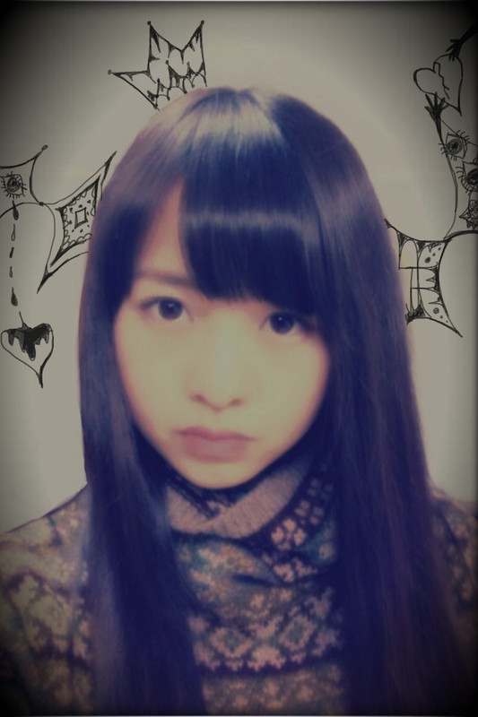

| 2012/01 29 Sun | 63回目*marika |
いつも読んでくださってる方、
初めて読んでくださった方、
コメントしてくださった方、
ありがとうございます!!
NACK5＊
すんごーーーく楽しかったです♪

ゆみたん、ちはるお疲れさまでした☆
（あっゆみたんは今日だけねにひ。)
会場にも沢山の方が来てくださって...
感動しました; ;
ありがとうございました!!
声だけの出演は初めてだったので
スタジオに入ったとたんに
心臓ばっくばくしてました~++;
でも目の前にみなさんがいたから
安心したー♡←
ぐたぐただったの、
笑ってくださったからよかた^^あは
ゆみ姉とちはるがサポートしてくれた^^
ありがとーーーう><
自分はそこまでマイペースでもないだろう...
て思ってたけど.....
そうなんかな!??
.....そうなんかなあぁぁ!!??←←
NACK5のアンケートで
「自分を構成している３原則は何ですか？」
というので、私は
（自由、ブログ、ファッション）^^*
そのまま!!だね。
ずっとこのままでいたいね＊
うん。
私にとってブログはとっても大事なの^^
ずっとブログしたかったから^^
書くのも楽しいし ♪♪
ね!!
ラジオって楽しいっ!!!!!
ラジオの勉強しよう。
盛り上がってよかった:D
来てくださったみなさん、
聴いてくださったみなさん、
ありがとうございました＊
選抜メンバー、朝からお疲れさま!!!
寒かったろうな><
ゆっくりからだ休んでね!!!＊
乃木坂46が沢山の方に知ってもらえますように...
今日はね、いろんな音楽のpv見てて。
なんかいろいろ思いついて
落書きしたいなぁ
て思って....描いてたら
けっこうすごい落書きになったよ笑
じゃじゃじゃじゃじゃん

うひー
ちょとキモチワルイ...??
でも、なんか。
こういうの描くのすきなんだ-:D
では!!
また今度質問お答えしますx(
いつもいつもありがとう♡♡
明日も元気に頑張りまりか☆
ぃぇぁ;-D


ベビたん*****bA by marika